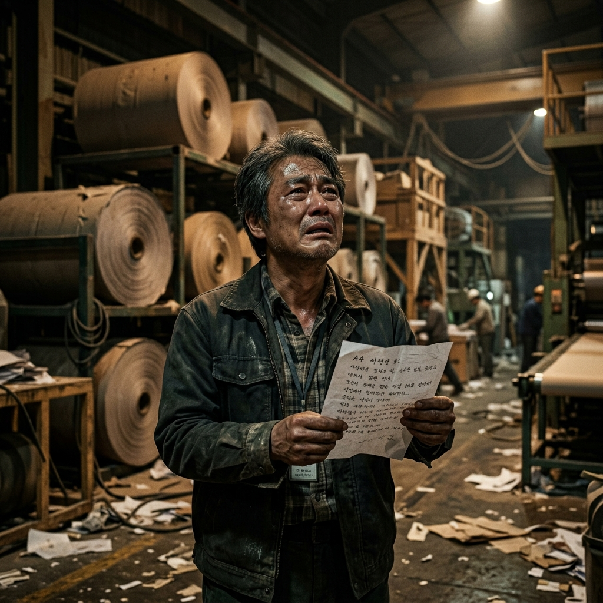

No Other Choice (2025): Movie Review

AI Image for No Other Choice (2025)
Recently, I watched No Other Choice (2025). It was my third film from director Park Chan-wook, and his return to dark, satirical thriller territory felt incredibly sharp.
Talking about the film: it follows a middle-class paper industry worker who, after being abruptly laid off, decides to systematically eliminate his job rivals to secure his family's future. It shares a striking resemblance to Bong Joon-ho’s Parasite (2019) in how it explores the brutal anxieties of late-stage capitalism. But where Parasite relied on a collaborative family hustle to infiltrate the wealthy, this protagonist operates with a lonely, desperate violence, trying to claw back the status he believes he deserves.
The film stands in stark contrast to the loud, CGI-laden blockbusters that dominate cinemas today. Instead of cheap jumps or action-packed set pieces, Park uses a slow-burning, meticulously framed atmosphere to build tension. The dry, pitch-black humour makes you laugh at situations that are deeply tragic, making the character's descent feel both absurd and strangely logical.
Ultimately, it raises uncomfortable questions about how quickly economic desperation can colour our morality. It is a cynical, tense ride that might not be for everyone, but if you appreciate stories that refuse to play it safe, you should definitely watch it.